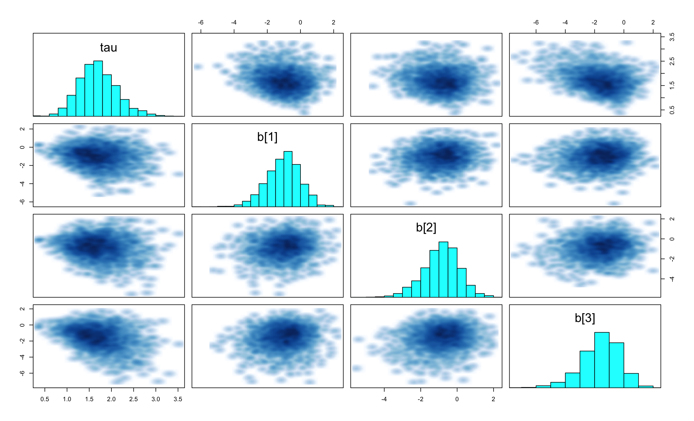
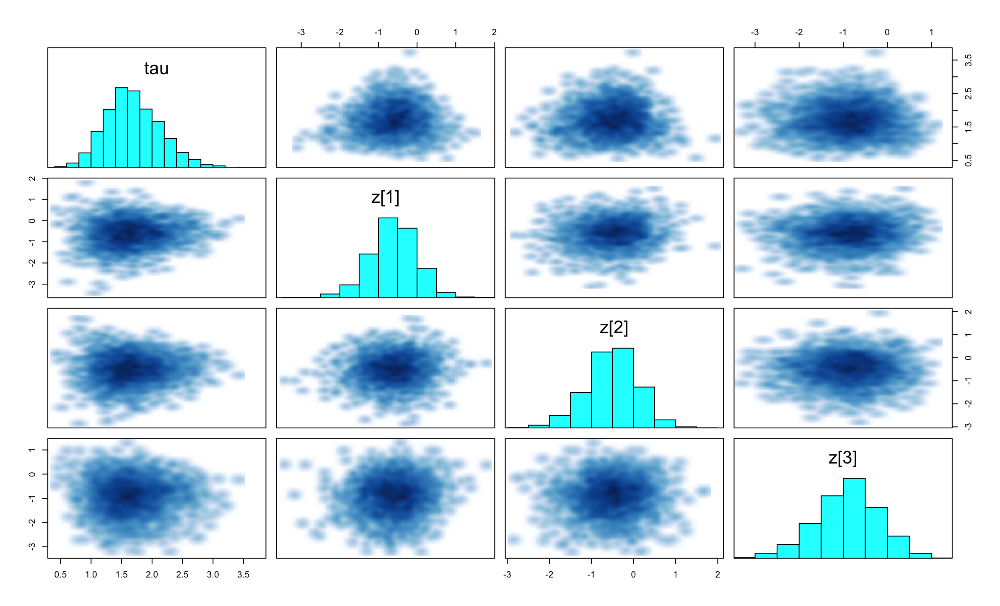
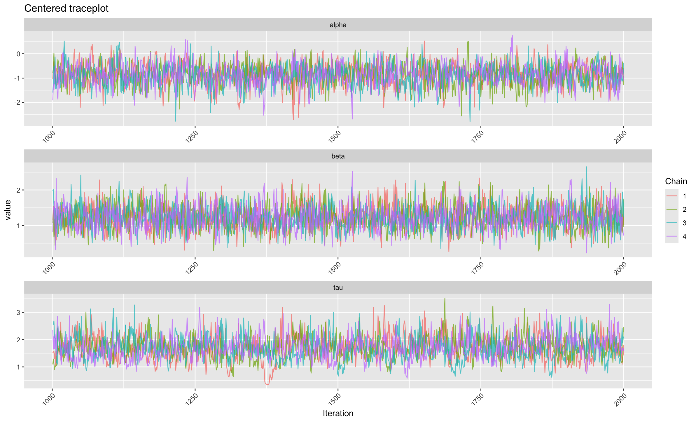
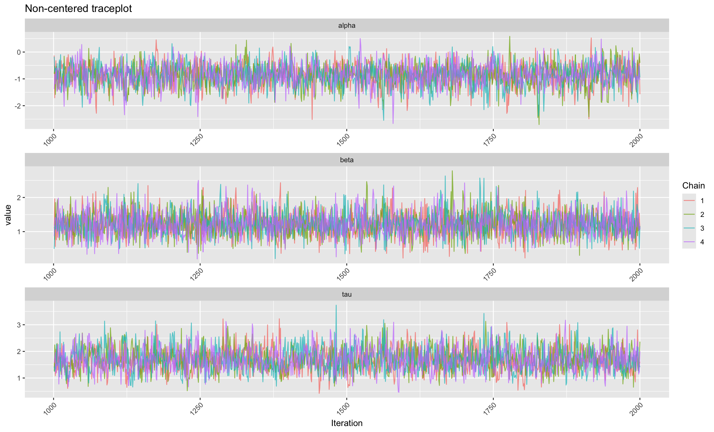

Notes
Step 1
The paper says JAGS can be “prohibitively slow” for some models. Can you give a concrete example of a model type where this is a real problem in ecological research? Why does model complexity affect sampling speed?
In ecological research, a common example of a model type that can be prohibitively slow for JAGS is a hierarchical model with a large number of parameters. Occupancy models for example often involve multiple levels of random effects and can include large numbers of parameters to estimate. The way that JAGS works is that it can only move in one of four directions, up down left right, so if it needs to move in a diagonal, it will take many steps to get there. thats in the case of a 2 parameter model, but in a model with many parameters, the number of steps needed to move through the parameter space can grow exponentially. For example, if you have a model with 10 parameters, every iteration of the sample will require 10 steps or 10 parameter updates, and if the model is complex with many parameters, it can take a very long time to converge to the posterior distribution.
What is random walk behaviour in an MCMC sampler? Use your own words and explain why it leads to high autocorrelation and slow mixing
Random walk behaviour in an MCMC sampler refers to the way the sampler explores the parameter space. In a random walk, the sampler takes small steps in random directions, which can lead to high autocorrelation because the samples are not independent of each other. This means that the sampler may take a long time to explore the parameter space effectively, leading to slow mixing. Slow mixing occurs when the sampler gets stuck in a particular region of the parameter space and takes a long time to move to other regions, which can result in biased estimates and longer convergence times.
Look at Figure 1 in the paper. What does the trend suggest about the direction the field is moving? Why do you think adoption of stan was slow in ecology at the time of publication?
For almost 15 years, BUGS has been the dominant software for Bayesian analysis in ecology, and only recently (relative to the paper’s publication) has there been a shift towards using Stan. Reasons for the slow adoption of stan in ecology are likely due to ecologists being unaware of the existence of stan, or are unsure when it would be preferred over bugs.
In STAT 482 we use RStan for all our computation. After reading the introduction of this paper, can you explain to classmate why the course uses stan rather than JAGS?
In STAT482 we use models that are more complex than what JAGS can handle efficiently. We simulate models with multiple parameters, and JAGS can be slow for these types of models due to its random walk behaviour. Stan, on the other hand, uses Hamilton Monte Carlo sampling, which allows it to explore the parameter space more efficiently and can handle more complex models with many parameters.
Step 2
The paper introduces the concept of a ball rolling on a frictionless surface. In this analogy: What does the position of the ball correspond to in the MCMC context? What does the potential energy correspond to? What does the kinetic energy correspond to? Why does the total energy (The Hamilton H) remaining constant help produce good MCMC proposals?
In the MCMC context, the position of the ball corresponds to the proposed value of the parameters. The potential energy corresponds to the negative log posterior distribution, which represents the landscape of the parameter space. The kinetic energy corresponds to the momentum of the sampler, which helps it move through the parameter space. The total energy remaining constant helps produce good MCMC proposals because it allows the sampler to explore the parameter space more efficiently. By maintaining a constant total energy, the sampler can make larger jumps in the parameter space without getting stuck in local minima, which can lead to faster convergence and better mixing.
Write the Hamiltonian as a function of position theta and momentum p. What are U and K in terms of the posterior distribution?
\[ H(\theta, \mathbf{p}) = U(\theta) + K(\mathbf{p}) \]
What are \(U\) and \(K\) in terms of the posterior distribution \(\pi(\theta \mid y)\)?
We define:
The potential energy: \[ U(\theta) = -\log \pi(\theta \mid y) \]
The kinetic energy (assuming a Gaussian momentum with mass matrix \(M\)): \[ K(\mathbf{p}) = \frac{1}{2}\mathbf{p}^\top M^{-1}\mathbf{p} \]
What is the leapfrog integrator? Why must a numerical approximation be used instead of the exact Hamiltonian path? What two tuning parameters control the leapfrog trajectory?
The leapfrog integrator is a numerical method used to approximate the Hamiltonian dynamics in HMC. It is used because the exact Hamiltonian path is almost impossible to compute analytically for complex models, so a numerical approximation is necessary to simulate the trajectory of the sampler through the parameter space. The two tuning parameters that control the leapfrog trajectory are the step size and the number of steps. The step size determines how far the sampler moves in each leapfrog step, while the number of steps determine how many leapfrog steps are taken before proposing a new sample. Proper tuning of these parameters is crucial for the efficiency and convergence of the HMC sampler.
What is the No-U-Turn Sampler (NUTS) and how does it solve the trajectory length problem of static HMC? what does “U-turn” mean geometrically?
NUTS basically determines the number of leapfrog steps to take by checking for a “U-turn” in the trajectory. A U-turn occurs when the sampler starts to move back towards an already explored region of the parameter space by previous leapfrog steps in the same iteration. Geometrically, this means that the trajectory is reversing direction and moving back towards the starting point, which can lead to inefficient sampling and slow convergence. By detecting U-turns, NUTS can adaptively determine when to stop the leapfrog steps, allowing it to explore the parameter space more efficiently without getting stuck in local minima or taking unnecessarily long trajectories.
HMC requires the gradient of the log-posterior. What technique does Stan use to compute this gradient automatically? Why is this important for practical usability?
Stan uses automatic differentiation to compute the gradient of the log-posterior. This technique allows Stan to calculate the gradients (which HMC requires at every step) efficiently and accurately without requiring the user to manually derive and implement the gradient calculations. This is important for practical usability because it simplifies the process of specifying models and allows users to focus on model building rather than on the mathematical details of gradient computation. It also reduces the likelihood of errors in gradient calculations, which can lead to more reliable and efficient sampling.
Step 3
What metric do the authors use to compare Stand and JAGS? Define effective sample size (ESS) precisely: how does it differ from the raw number of MCMC iterations, and why is the ratio ESS / time a better measure for efficiency than raw computation speed?
The authors use the effective sample size (ESS) per unit of time as a metric to compare Stan and JAGS. Effective sample size (ESS) is a measure of the number of independent samples that are equivalent to the correlated samples obtained from an MCMC sampler. It accounts for the autocorrelation in the MCMC samples, which can reduce the effective number of independent samples. The raw number of MCMC iterations does not account for the correlation between samples, so it can be misleading when comparing the efficiency of different samplers. The ratio ESS / time is a better measure for efficiency because it reflects both the quality of the samples (through ESS) and the computational time required to obtain those samples, providing a more comprehensive assessment of the sampler’s performance. A higher ESS per unit of time indicates that the sampler is producing more independent samples in less time, which is a more meaningful measure of efficiency than just the raw computation speed.
The paper tests models of varying size and complexity. Name two ecological models used in the benchmark and describe their structure briefly. Why is a hierarchical model a harder case for MCMC than a simple regression?
Swallows - a state-space survival model fit to mark-recapture data of birds. It estimates both survival and detection probabilities simultaneously, with environmental covariates influencing survival. It has 177 parameters total, 172 of which are latent (random effects). with year and family effects on survival and family effects on detection.
Wildflower - a binomial generlaized linear mixed model estimating flowering success. It has 1101 parameters, 1072 of which are latent, with crossed random effects, meaning the random effects are not nested but cross eachother (year effects on the intercept, and cross effects on both intercept and slope for a covaritate).
A hierarchical model is a harder case for MCMC than a simple regression because it involves multiple levels of parameters, including random effects, which can lead to complex posterior distributions with strong correlations between parameters. This can result in slow mixing and convergence issues for MCMC samplers, especially those that rely on random walk behavior like JAGS. In contrast, a simple regression typically has fewer parameters and a simpler posterior distribution, making it easier for MCMC samplers to explore the parameter space efficiently.
What is non-centered parameterization (NCP)? If a random effect were written as \(\alpha_j \sim \mathcal{N}(\mu, \tau^2)\), how would you re-write this in non-centered form? Why can the centering choice dramatically affect Stan’s efficiency?
Non-centered parameterization (NCP) is a reparameterization technique used to improve the efficiency of MCMC sampling, particularly in hierarchical models. In a centered parameterization, the random effects are directly modeled as being drawn from a distribution with parameters that depend on the data. In contrast, in a non-centered parameterization, the random effects are expressed in terms of standard normal variables that are then transformed to match the desired distribution. For the random effect \(\alpha_j \sim \mathcal{N}(\mu, \tau^2)\), the non-centered form would be: \[\alpha_j = \mu + \tau z_j\]
where \(z_j \sim \mathcal{N}(0, 1)\) is a standard normal variable. The centering choice can dramatically affect Stan’s efficiency because it can influence the geometry of the posterior distribution. In some cases, a centered parameterization can lead to strong correlations between parameters, which can slow down the convergence of the sampler. On the other hand, a non-centered parameterization can help to reduce these correlations and improve the efficiency of the sampler, especially in cases where the data are sparse or the random effects have a large variance. Choosing the appropriate parameterization can lead to faster convergence and more efficient sampling, while a poor choice can result in slow mixing and inefficient sampling.
Step 4
For simple, small models: what do the results say about the relative efficiency of Stan versus JAGS? Is this surprising?
The relative efficiency of Stan versus JAGS for the Redkite model (5 parameters) is about 3.54, nowhere near the 63x improvement seen with the larger Logistic model, but still a modest amount. This is not surprising because for simple, small models, the computational overhead of using Stan may not be as significant, and JAGS can still perform reasonably well. However, as model complexity increases, the advantages of Stan’s more efficient sampling methods become more pronounced, leading to much greater efficiency compared to JAGS.
For larger, more complex models: by approximately how much does Stan outperform JAGS (in terms of ESS/min)? What feature of the model drives the biggest gains?
For larger models like Wildflower and Logistic, Stan outperforms JAGS by approximately 34x and 63x respectively. The biggest gains are driven by the hierarchical structure of the models, which can lead to strong correlations between parameters and slow mixing in JAGS. Stan’s use of Hamiltonian Monte Carlo and its ability to handle complex posterior geometries allows it to explore the parameter space more efficiently, resulting in much higher effective sample sizes per unit of time compared to JAGS.
For heirarchical models: the paper finds that NCP is important for Stan but less so for JAGS. Can you explain why HMC is more sensitive to parameterization than Gibbs sampling?
HMC is more sensitive to parameterization because it relies on gradients of the log posterior and is therefore affected by the geometry of the parameter space. Poor parameterizations, such as those producing funnel-shaped posteriors or strong correlations, create regions of dramatically varying curvature, the geometry in one region of the posterior is so different from another than no single step size can work efficiently everywhere. This often requires smaller step sizes in the leapfrog algorithm to maintain stability and avoid divergent transitions, which can reduce mixing efficiency. In hierarchical models, centered parameterizations can induce strong dependencies between parameters, leading to difficult geometry for HMC. Non-centered parameterizations often improve efficiency by reducing these dependencies. In contrast, Gibbs sampling updates parameters from their full conditional distributions and does not rely on gradient information, making it less sensitive to global geometric issues, although it may still mix slowly under strong dependence.
The paper also discusses divergent transitions - a diagnostic unique to HMC. What is a divergent transition geometrically? Why does Stan warn about them while JAGS gives no equivalent warning? What should you do when you see divergent transitions in your Stan output?
Geometrically, a divergent transition occurs when the step size is too large for the local curvature, if the ball is on a steep slope and it takes a step too big, it can “fly off” of the surface entirely into a region of extremely low density. The total energy H explodes to infinity instead of staying constant. In Stan, the leapfrog trajectory tracks the total energy H throughout the path. At the end of each trajectory, Stan compares the proposed H with the inital H, if the difference is very large, Stan flags it as a divergent transition. JAGS, on the other hand, does not use Hamiltonian dynamics and therefore does not have a mechanism to detect such issues. It uses Gibbs sampling which doesnt simulate trajectories across the posterior and therefore has no concept of a leapfrog going unstable or energy exploding. No trajectory to monitor, nothing to flag. This doesn’t mean JAGS is safer, if JAGS encounters a funnel-shaped posterior, it doesn’t diverge, but it also doesn’t tell you that it’s systematically undersampling the neck. The chain just quietly produces biased estimates with no warning at all. The R-hat and trace plots can look perfectly fine. If we see divergent transitions in our Stan output, we could try a couple options including: 1) increasing adapt_delta: increasing the target acceptance rate can help reduce the step size, which may help to avoid divergent transitions. 2) reparameterizing the model: using a non-centered parameterization can help to improve the geometry of the posterior and reduce the likelihood of divergent transitions. 3) reconsider the prior: sometimes divergence arise because a prior is too weak, allowing the posterior to have long tails or extreme curvature. Strengthening the prior can help to regularize the posterior and reduce divergence.
What are the stated limitations of Stan identified in the paper? Think about situations in STAT482 where these limitations would matter
The limitations include: 1) Stan does not support discrete parameters because HMC relies on gradients, and discrete parameters do not have gradients. 2. Stan produces a more diagnositc output than JAGS, like tree depths, step sizes, mass matrix quantities, divergences, etc… and the user is responsible for checking and understanding all of these. This requires familiarity with HMC principles that JAGS user’s dont need. 3. Stan is more sensitive to tuning despite NUTS automating most of it. It’s sensitive to things like warmup length, starting values, and the target acceptance rate. 4) Stan uses a more complex modelling language than JAGS, which adds friction especially for users already familiar with BUGS syntax.
Step 5
When you look at the pairs plot for hierarchical model, what pattern indicates the “funnel” geometry problem? Can you see it in your output?


We can see the funneling shape (pay attention to tau vs z/ tau vs b), in the centered parameterization, you can see the funneling on the left side of the plot, where the variance of the random effects (tau) is small, the parameters are tightly correlated and the posterior geometry is difficult for HMC to explore. In the non-centered parameterization, the funneling shape is much less pronounced, more of an elliptical shape, indicating that the parameters are less correlated and the geometry is easier for HMC to explore.
After applying NCP, does your trace plot better? How do you define “better” in this context?


Focusing on tau (if tau is shit, alpha and beta will also be shit) we can see that in the centered model the chains dont seem to overlap very well, it looks sticky and Sluggish, meaning they didnt explore the parameter space efficiently, whereas the non-centered model overlap a little bit more, thats what we use to compare which model is better.